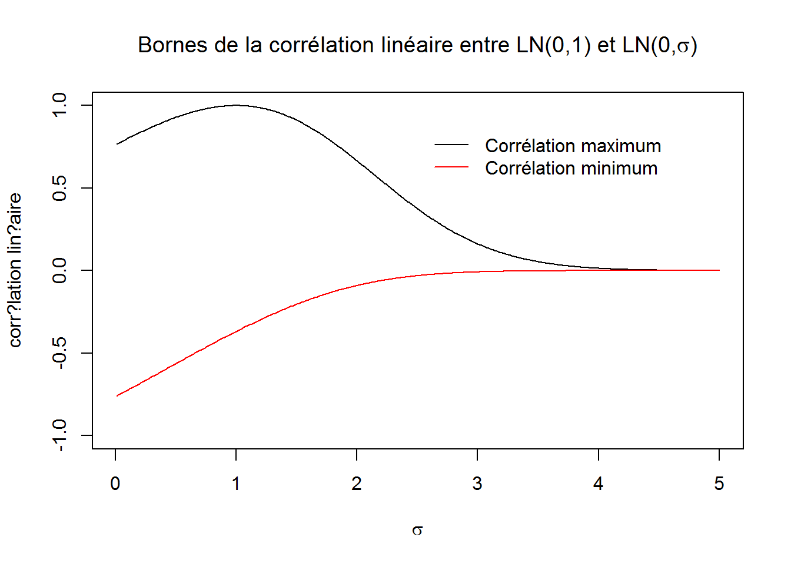

Utiliser la visualisation pour mieux comprendre certaines notions techniques et mieux communiquer les informations dans les séries de données.
Analyse de la sinistralité Modèles statistiques de différentes distributions Corrélation linéaire Copule et visualisation en 3D Modélisation des courbes des taux et leur projection
sigma=seq(0.01,5,0.01)
rho=1
plot(sigma,exp(0.5)*exp(sigma^2/2)*(exp(rho*sigma)-1)/sqrt((exp(1)-1)*exp(1)*exp(sigma^2)*(exp(sigma^2)-1)),ylim=c(-1,1),type="l",xlab=expression(sigma),ylab="corr?lation lin?aire",main=expression("Bornes de la corrélation linéaire entre LN(0,1) et LN(0,"*sigma*")"))
legend(2.5,0.9,c("Corrélation maximum","Corrélation minimum"),col=c(1,2),lty=1,lwd=1,bty = "n")
rho=-1
lines(sigma,exp(0.5)*exp(sigma^2/2)*(exp(rho*sigma)-1)/sqrt((exp(1)-1)*exp(1)*exp(sigma^2)*(exp(sigma^2)-1)),col=2)
Copyright © 2016 DatavISUP